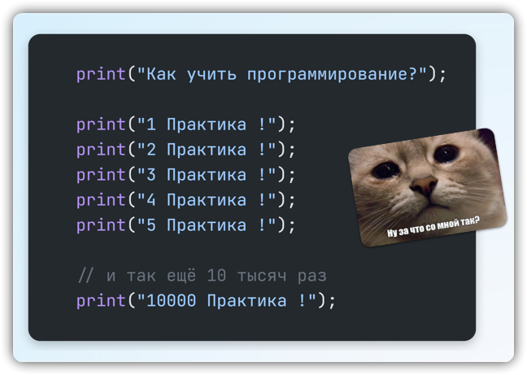
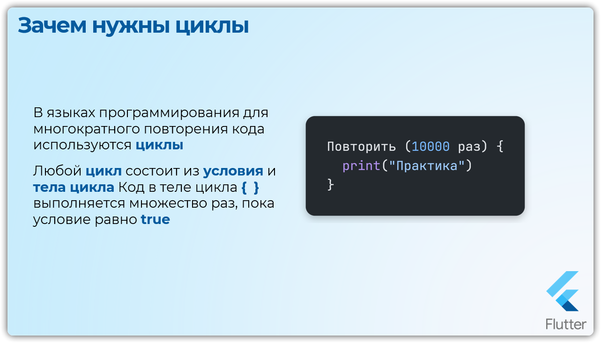
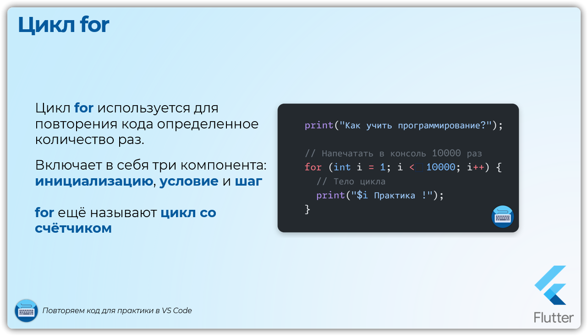
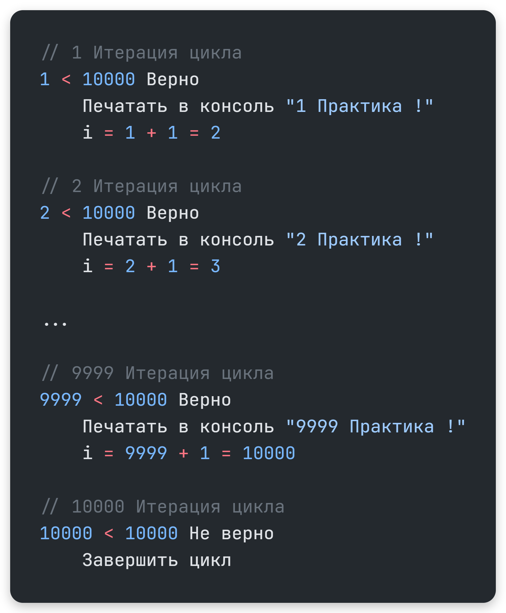
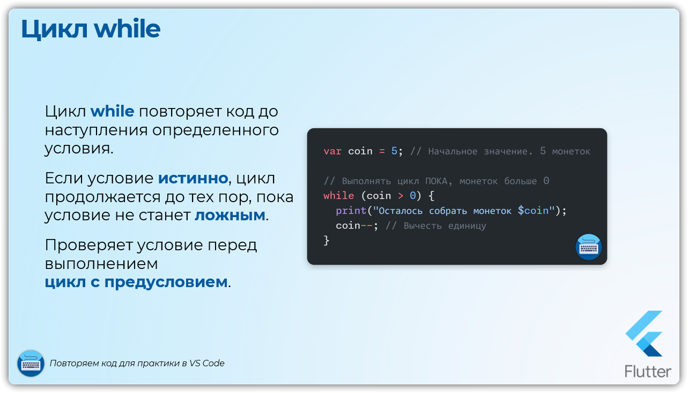
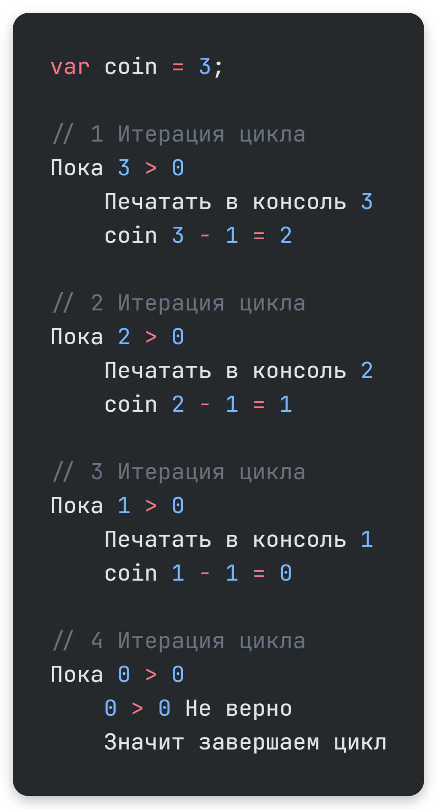
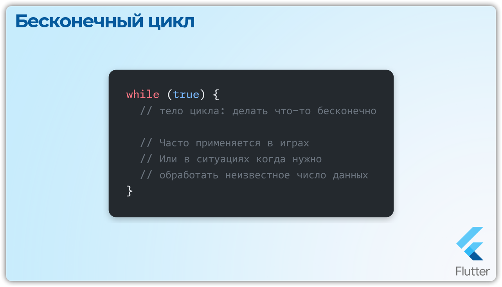
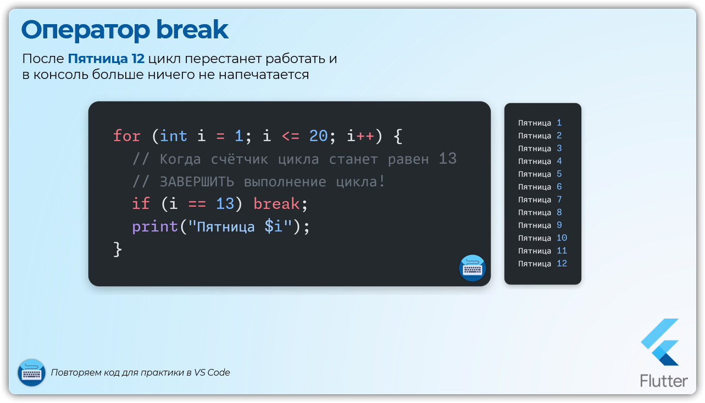
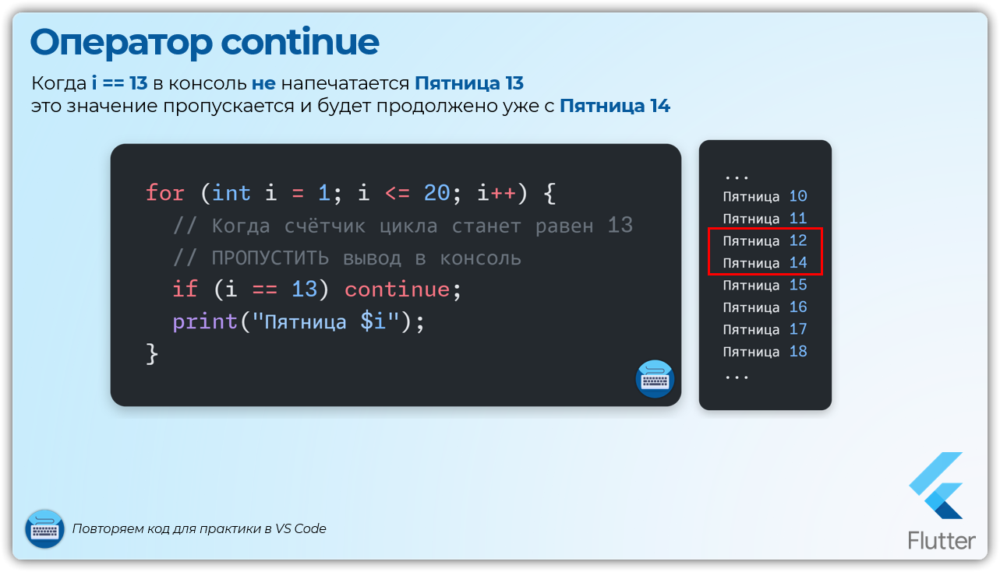
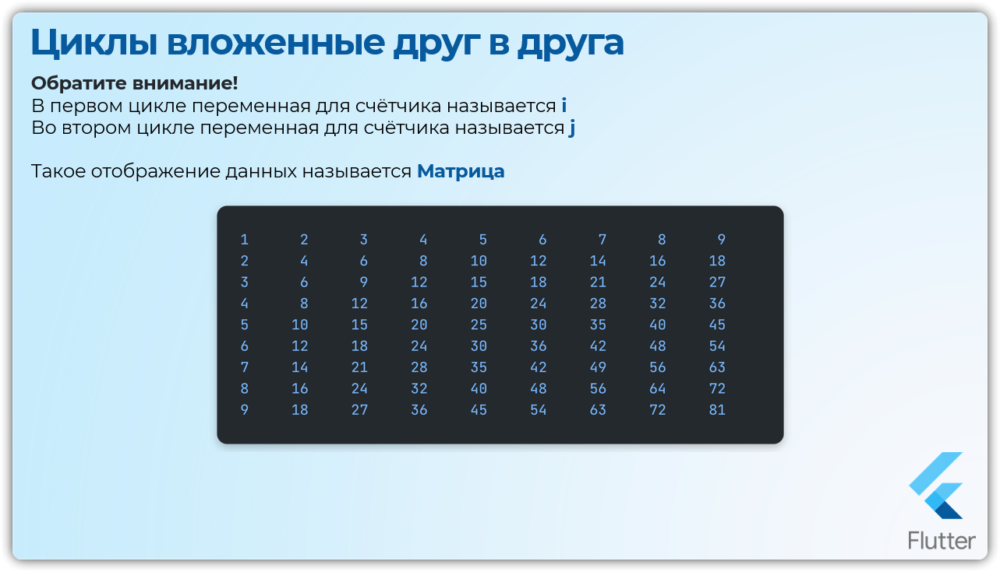

Урок 7: Циклы
Зачем нужны циклы
Зачем нужны циклы
Компьютеры круче людей в том, что могут делать одни и же действия много раз, но быстро и без усталости!
Иногда, определенную часть кода, нужно повторить множество раз .
Можно, конечно, скопировать и вставить это выражение...
А что делать, если нужно его повторить, например, 10 тысяч раз? Копирование вставка в этом случае - боль 😵💫🥴

Dart


print("Как правильно учить программирование?");
print("1 Практика !");
print("2 Практика !");
print("3 Практика !");
print("4 Практика !");
print("5 Практика !");
// и так ещё 10 тысяч раз
print("10000 Практика !");
Многократное повторение кода
В языках программирования для многократного повторения кода используются циклы
Любой цикл состоит из условия и тела цикла
Код в теле цикла { } выполняется множество раз, пока условие равно true

Цикл for

Цикл for
Используется для повторения кода определенное количество раз. Он включает в себя три основных компонента: инициализацию, условие и шаг, который выполняется после каждой итерации.
Такой цикл называют ещё счётчиком
Синтаксис for
for (инициализация; условие; шаг) {
// код, который выполняется в каждой итерации
}
Одно выполнение тела цикла называется итерацией цикла
Цикл for
print("Как правильно учить программирование?");
// Напечатать в консоль 10000 раз
for (int i = 1; i < 10000; i++) {
// Тело цикла
print("$i Практика !");
}
- Инициализируем переменную
iсо значением 1 - Цикл будет продолжаться, пока
iменьше или равно 10000 - В каждой итерации значение
iувеличивается на 1

Цикл while
Повторяет код до наступления определенного условия.
Если условие истинно, цикл продолжается до тех пор, пока условие не станет ложным.
Проверяет условие перед выполнением, поэтому его называют цикл с предусловием.

Цикл while
var coin = 5; // Начальное значение. 5 монеток
// Выполнять цикл ПОКА, монеток больше 0
while (coin > 0) {
print("Осталось собрать монеток $coin");
coin--; // Вычесть единицу
}

Можно написать бесконечный цикл, если условие остается всегда истинным:
Бесконечный цикл while
while (true) {
// тело цикла: делать что-то бесконечно
}

Цикл `while` с постусловием
В отличие от обычного while первый раз действие в теле цикла { } выполнится в любом случае, а условная проверка будет после.
Цикл do-while
do {
print("Осталось собрать монеток $coin");
coin--;
} while (coin > 0);
Операторы continue и break
Операторы continue и break
Иногда бывает нужно:
прерватьвыполнение цикла - используем операторbreakпропуститьитерацию и перейти к следующей - используем операторcontinue
Пример с оператором break
Оператор break
for (int i = 1; i <= 20; i++) {
// Когда счётчик цикла станет равен 13 ЗАВЕРШИТЬ выполнение цикла!
if (i == 13) break;
print("Пятница $i");
}
После Пятница 12 цикл перестанет работать и в консоль больше ничего не напечатается

Пример с оператором continue
Оператор continue
for (int i = 1; i <= 20; i++) {
// Когда счётчик цикла станет равен 13 ПРОПУСТИТЬ вывод в консоль
if (i == 13) continue;
print("Пятница $i");
}
Когда i = 13 в консоль не напечатается Пятница 13 это значение пропускается и будет продолжено уже c Пятница 14

Бесконечный цикл
Помните про бесконечный цикл?
Из него можно выйти с помощью оператора break
Сценарии использования циклов
Цикл `for` в `обратном порядке`
Нужно изменить начальное значение, знак сравнения и счётчик убавлять на 1
Цикл for в обратном порядке
for (int i = 5; i >= 1; i--) {
print(i); // 5 4 3 2 1
}
Шаг цикла `for`
Например, вместо i++ можно указать шаг i += 2 (или любой другой)
Таким образом мы получаем в цикле четные значения счётчика
Шаг цикла for
for (var i = 0; i < 10; i += 2) {
print(i); // 0 2 4 6 8
}
Циклы `вложенные` друг в друга
Например, вложим цикл for внутрь другого цикла for и попробуем вывести таблицу умножения на экран
Вложенные циклы
import 'dart:io'; // Библиотека для работы с вводом/выводом
main() {
// Печатаем таблицу умножения
for (int i = 1; i <= 9; i++) {
for (int j = 1; j <= 9; j++) {
// Используем знак табуляции '\t' для выравнивания
stdout.write("${i * j}\t"); // stdout.write вывод в одной строке
}
stdout.writeln(); // Перенос строки в конце ряда
}
}

Обратите внимание!
В первом цикле переменная для счётчика называется i
Во втором цикле переменная для счётчика называется j
Такое отображение данных называется Матрица
Подсчёт количества
Часто необходимо подсчитать сколько раз что-либо произошло в ходе выполнения. Например, подсчитаем сколько четных чисел встречается от 0 до 10
Подсчёт количества
main() {
// Создадим переменную для подсчета четных чисел
// ВАЖНО! Она должна быть за пределами цикла
int count = 0;
for (var i = 0; i <= 10; i++) {
if (i.isEven) {
count++;
}
}
// Напечает в консоль количество всех четных значений
print(count); // 6 штук
// Удостоверимся 0 2 4 6 8 10 = 6 штук
}
Подсчёт суммы
Классическая задача найти сумму элементов.
Например, можно найти сумму всех чисел от 0 до 10.
Подсчёт суммы
main() {
// Счётчик для суммы
int sum = 0;
for (var i = 0; i <= 10; i++) {
sum += i;
}
print(sum); // 55
// 0 + 1 + 2 + 3 + 4 + 5 + 6 + 7 + 8 + 9 + 10 = 55
}